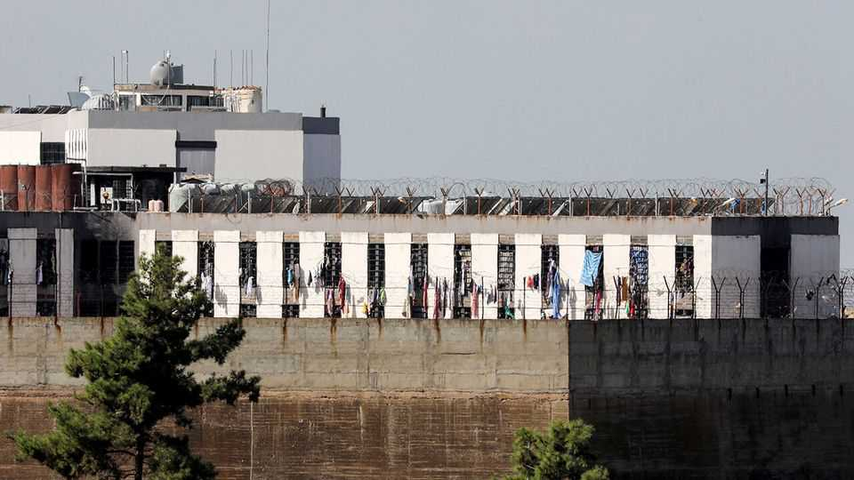

A grubby amnesty law highlights Lebanon’s sectarian divides
Thousands could walk free from prison. That will not fix a broken justice system

Oct 8th 2026
Those who run Lebanon have cut corners in the name of justice before. In 1991 the men who rose to power after a 15-year civil war granted themselves and their allies immunity from prosecution for many of that conflict’s crimes. The law helped secure a fragile peace, but also deepened sectarian divisions. So when lawmakers approved another amnesty in August, it brought back bad memories.
The new one will be the most wide-reaching in 35 years. Perhaps a third of Lebanon’s prisoners will be released or have their sentences commuted. Ostensibly, the legislation is to reduce overcrowding in prisons, a real problem. Inmates at Roumieh, a jampacked prison overlooking Beirut, the capital, celebrated when the law was passed. To others it looks like a grubby sectarian bargain.
Lebanon’s prisons hold three times as many inmates as they are supposed to. Overcrowding has worsened since Israel began its war against Hizbullah, a Shia Muslim militia, forcing the authorities to transfer prisoners from the front lines in the south. Roumieh is overflowing; inmates sleep on the floor in shifts. Barracks, warehouses and stables have been repurposed as detention centres. The cash-strapped justice system barely functions. In 2024 over 80% of prisoners were awaiting trial, up from about 50% in 2017.
But the law does also reflect sectarian politicking. With Hizbullah weakened by Israel, Lebanon’s Sunni Muslims are on the front foot. They pushed for the amnesty to include Islamists whom they argued had been unfairly tried in Hizbullah-aligned military courts. These include Ahmed al-Assir, an imam, and his followers. After Hizbullah intervened on the side of the Assad regime in Syria’s civil war in 2013, Mr Assir urged his supporters to take up arms against the group inside Lebanon. They battled the Lebanese army (and, say his supporters, Hizbullah) in Sidon, a southern city. Some 18 soldiers were killed.
Changing regional dynamics tipped the scales, too. Since coming to power in 2024 Ahmed al-Sharaa, Syria’s president, has pushed the Lebanese to hand over Syrian prisoners. Many have ideological ties to Lebanon’s Sunni Islamists. “This jump-started the whole process which got us to the amnesty law,” explains Makram Rabah of the American University of Beirut. In February Lebanon agreed to transfer 300 Syrians to Mr Sharaa’s authorities. Some 260 have been sent so far.
To get through parliament, the amnesty had to appear even-handed. Shia mps lobbied for cannabis dealers, whose farms are mostly in the Hizbullah-dominated Beqaa valley; Christian ones sought protection for fighters who collaborated with Israel after it occupied southern Lebanon during the civil war. “Everyone wanted their share of the pie,” says Mr Rabah. “A simple legislative act that was supposed to remedy injustice morphed into a sectarian monster.”
Many Lebanese are angry. Nizar Saghieh of Legal Agenda, a pressure group, calls the amnesty a “Trojan horse”, aimed at exonerating corrupt public officials. Others point out that it will do little to fix deeper problems in the justice system. The courts will go unreformed and the prisons will fill up again. The sweeping powers of Lebanon’s military courts add to the overcrowding and critics worry that Hizbullah’s allies control them; efforts to fix them have stalled, complains Mark Daou, a reformist mp from the Druze community.
The amnesty has been delayed by legal appeals but the Constitutional Council is unlikely to strike down the law. At best it may ease the pressure on Lebanon’s overstuffed prisons. But in doing so, it may also exacerbate sectarian tensions. Fixing the broken Lebanese state is a tall order. Its leaders have fallen short again. ■